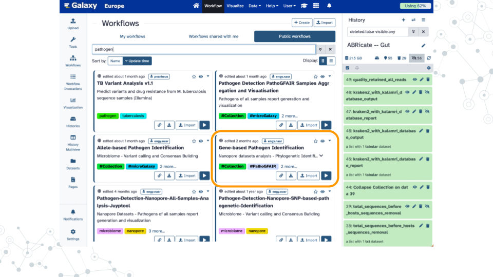

Chapter 6 Finding AMRs
Introduction
Antimicrobial resistance genes (AMR genes) allow microbes to counteract the effects of antimicrobial drugs used to treat infections. Databases such as the NCBI Pathogen Detection Reference Gene Catalog and the Comprehensive Antibiotic Resistance Database contain thousands of curated resistance genes and help make AMR-related data more widely available. Here we use the ABRicate tool which can mass screen contigs for antimicrobial genes using a variety of databases including the NCBI database. We will analyze the ZymoBIOMICS Gut Microbiome Standard which contains “21 different strains to mimic the human gut microbiome” and has been sequenced using PacBio Hi-Fi long read technology ((SRR13128014)[https://www.ncbi.nlm.nih.gov/sra/?term=SRR13128014]). A similar strategy can be used to screen for virulence factors using databases such as the Virulence Factor Database (VFDB).


6.0.4 Gene-based Pathogen Identification



Footnotes
Contributions and Affiliations
- Jennifer Kerr, Notre Dame of Maryland University
- Frederick Tan, Johns Hopkins University
- Based on “Pathogen detection from (direct Nanopore) sequencing data using Galaxy - Foodborne Edition” (GTN)
Last Revised: August 5, 2024